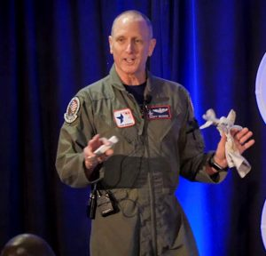

The Fighter Pilot’s Guide To Pitching: A Goal Without A Plan Is Just A Wish.
by Lt. Col. Scott “Hurler” Weaver and Coach Eric “Lefty” Niesen.
I think most would agree that setting goals are important. Without goals in life, work or sports, it’s like having an airplane with no rudder. Well, maybe not that critical. Of course, it’s a bit dramatic to give such an example since a plane without a rudder would crash. However, put another way, a boat without a rudder would just wander around aimlessly, without direction. In this article we’ll discuss goal and objective setting for pilots and pitchers.
Scott. At one point in my career, I had ample time to reflect and decide what my next assignment would or could be. The needs of the USAF always took precedent over the individual’s needs, of course, but I set my first long term goal of flying the F-16C – the super sleek, fly by wire, multi-role jet fighter.
I had never been trained on “goal setting” per say, but as a reminder of how I woke up to the “Rise and Grind” mentality, I saved a photo of the F-16C flying straight up into the blue sky. You see, the F-16C had what was called a “1 to 1 thrust to weight” ratio, meaning the jet weighs 30,000 pounds and the Pratt and Whitney engine could produce 30,000 pounds of thrust. It was the first generation of fighter jets that could climb straight up and maintain (for the most part) airspeed and continue to climb!
Eric.s I wasn’t drafted out of high school, so my goal was to pitch for a top tier D-1 program. When Wake Forest University offered me the opportunity to pitch in Winston Salem, NC, I jumped at the chance. When I arrived on campus, I made my “long term” goal to get drafted into the MLB. I knew I had to get stronger, faster and smarter. My smaller goals or objectives we’re all geared toward that ultimate goal of putting on a big-league uniform.
Next week our coaching staff welcomes a new class of freshman to our campus. It’s an exciting time for them as well as our coaching staff. Similar to the new recruits in the military, we’ll introduce them to our baseball culture and our way of doing business at our university. Part of that is instilling the need for goal and objective setting. Not only do we talk about team goals, like winning championships, but we set more specific goals for our pitching staff. Then we take it a step further and discuss individual goals. We use leaderboards or spreadsheets to track such things as strike percentages, velocity and execution in the bullpen. We’ll track different stats to create a competitive atmosphere amongst the pitchers, not by design, but by setting goals and objectives to make everyone on the staff better.

At a higher level of objective setting, we’ll track pitch patterns or pitch combinations, such as: Fastball/curveball/fastball in different locations. If a pitcher can get through that combination of pitches, then we’ll step up a level (leveling up) and challenge him with other combinations.
One of our team goals we set last year as a staff was K/9 innings – the number of strikeouts per 9 innings. It’s clear, concise and measurable. And it paid off big time! Last year we led the conference in that category which, as every coach and pitcher will tell you, is a key stat in any team’s success.
And finally, we talk about how to win using reverse engineering. In other words, we look at successful teams and pitching staffs and analyze what they do to win. There’s no point in measuring stats like exit velocity if it doesn’t help us win. Bottom line, we’re not trying to reinvent the wheel and come up with new or different concepts to pitching, but we want to have clear and concise goals and objectives that every player understands – and that do one thing and one thing only – help us win!
Scott. As a pilot with just under 2,000 hours in the F-16C, most of our missions or “sorties,” were between 1 hour to 1 hour and 20 minutes long. Each training sortie had goals or objectives – such as bombs on time on target (BOTOT). Each goal was specific, measurable, attainable, relevant and timely (SMART). The over-arching goal of each mission was to prepare us for war. The objectives of each mission were the means to measure our direction to the final goal.
Eric. Although the goals and objectives of a coach are not life or death, it’s my goal to push my athletes to their personal limits. While I’m not trying to make every student-athlete a professional ballplayer, my goal is to teach them to be a better person – in life, and on and off the field. I do this by sitting down with each player at the beginning of the season with the purpose of setting specific goals. And we discuss objectives on how to reach those goals. The more specific those goals are, the better. One goal we might have is: “Winning a Championship.” Then, we set objectives on how to get there. Examples of these objectives might include: Throw first strike pitches 65% of the time; and Develop a third pitch you’re comfortable throwing at any time in the count.
Breaking the game down into smaller goals, giving players concrete examples of how to reach their goal, gives them direction. Otherwise, setting long term goals without objectives is kind of like the boat without a rudder!
Scott: Currently, I’m mentoring a cadet at the American Airlines Flying Cadet program. Brandon is a 20+ year old, from the Dallas, Texas area who wants to be an airline pilot. The requirements to become a commercial airline pilot are daunting. There are multiple exams, both written and oral. There are dozens of check rides and evaluations and ratings to obtain – from private, instrument, commercial, instructor to air transport ratings. It’s at least an 18 – 24 month program of hard work and determination. From Brandon’s perspective, the task is a huge mountain to climb. Last week Brandon struggled with his first oral exam on the subject of take-off and landing data. This week he asked me for tips on how to flare the aircraft for landings – all basic bricks in the foundation. His attitude is outstanding, but at times he seems overwhelmed.
But here is the plan to get Branson to his dream job. We started by breaking his long-term goal down into smaller objectives. When I asked Brandon what his ultimate goal was, he said “to be in the right seat of a legacy airline, yanking the gear handle of a Boeing 737 or an Airbus-320 and someday to fly the Boeing 777-300.”
I told Brandon to put the above photo on his iPhone as his home screen, or place it somewhere where he’ll see it daily. Together we have now solidified his ultimate goal to become a commercial airline pilot. Everyday he’ll move forward with smaller tasks or objectives to help him accomplish his dream. His confidence shows. “I’ll do whatever it takes,” was his response. Now, posting a photo where he can see it day-in and day-out serves as his inspiration. He’ll have weeks and days of “Rising and Grinding” to meet his true goal of being a commercial airline pilot – but he is well on his way.
Not just for pilots and pitchers. In conclusion, setting goals and objectives are not only important in flying or baseball, but in all facets of business and personal life.
Moving toward success. If you’re a coach, sit down with your players and give them some clear goals and objectives. This could be the first time they’ve actually thought about the concept of goal setting. If you’re an aspiring pilot or someone who just wants to get better, stronger and smarter, set clear goals and objectives. Write them down so you can see them every day. The process helps give you a clearer sense of direction. Make sure they are clear, specific, measurable, attainable and timely goals, and most of all paint that picture in your head so you wake up and face the day-to-day challenges of succeeding!
Strategic Combination.

The Pilot and the Pitcher. The Fighter Pilot’s mental view of pitching comes from Lt. Col. Scott “Hurler” Weaver. The Coach’s perspective on the physical side to pitching comes from Coach Eric “Lefty” Niesen, pitching coach at Georgetown University. Learn more about The Fighter Pilot’s Guide to Pitching.
About Me

Scott Weaver is a public speaker, author, pilot, aviation historian and retired Lt. Col. USAF.